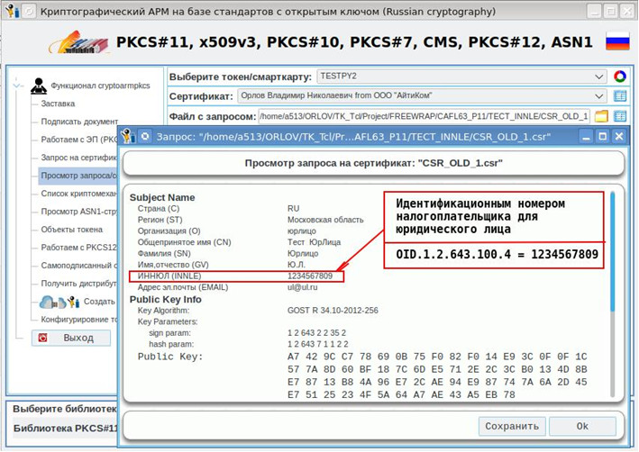

Достаточно долгое время, на Хабаре планомерно появлялся цикл статей о написании и развитии OpenSource инструмента для работы с ЭЦП (электронной цифровой подписью). Автор этого проекта - Орлов Владимир Николаевич (@saipr).
По сути, автор пишет аналог КриптоПро с использованием открытых библиотек. В качестве интерфейса была выбрана библиотека Tcl/Tk.
Вот относительно свежая статья, в которой автор рассказывает об изменениях в программе:
https://habr.com/ru/articles/591369/
Репозитарий с исходным кодом и готовым сборками располагается здесь:
https://github.com/a513/CAFL63/tree/master
Почему-то страница релизов на GitHub пустая, но сборки доступны на том же GitHub по прямым ссылкам:
Внешне программа выглядит следующим образом:

В качестве криптопровайдера данная утилита использует openssl (и вроде как даже содержит внутри себя модифицированную версию openssl, приведенную к требованиям приказа №795 ФСБ России в редакции от 29.01.2021 года - там поддерживаются новые oid-ы).
Утилита умеет работать с токенами PKCS#10, PKCS#11, PKCS#12, с форматом X509, поддерживает ГОСТ-шифрование.
Предполагается, что данной утилитой могут пользоваться как удостоверяющие центры (УЦ) для выпуска сертификатов ЭЦП, так и частные пользователи для работы со своими электронными подписями.